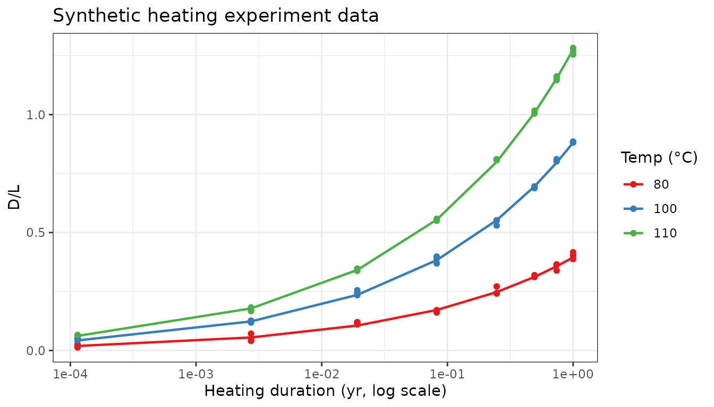
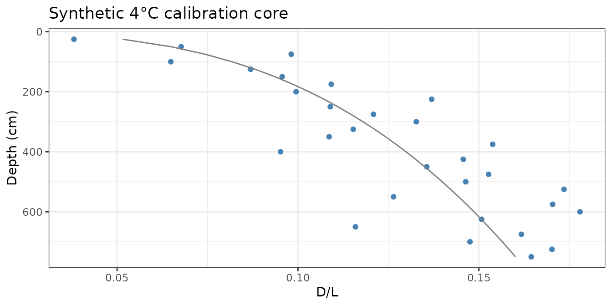
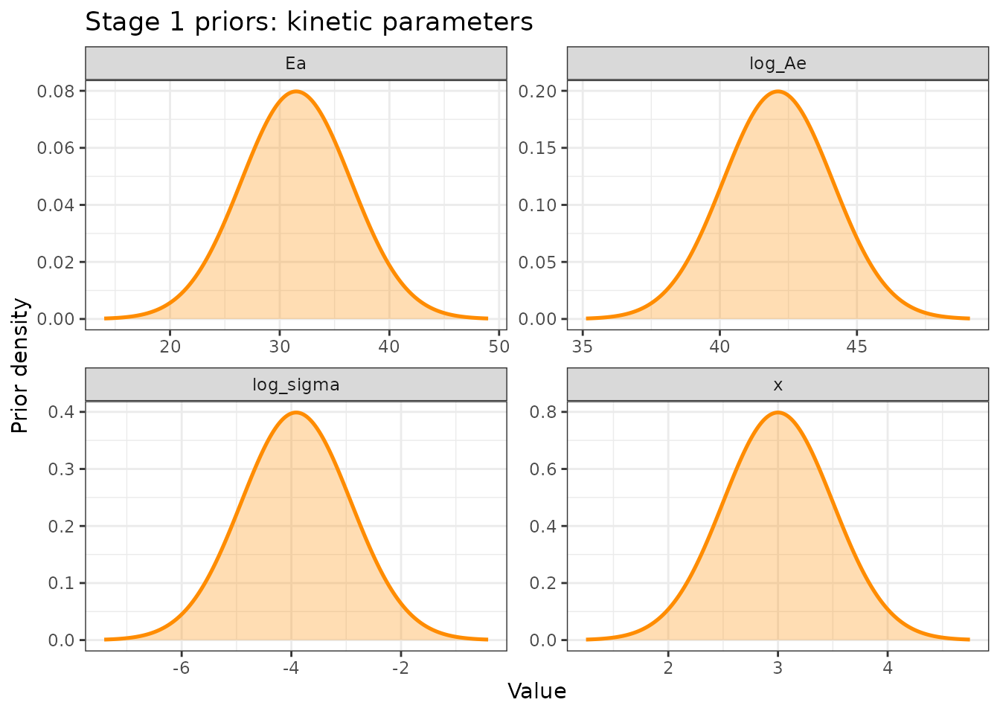
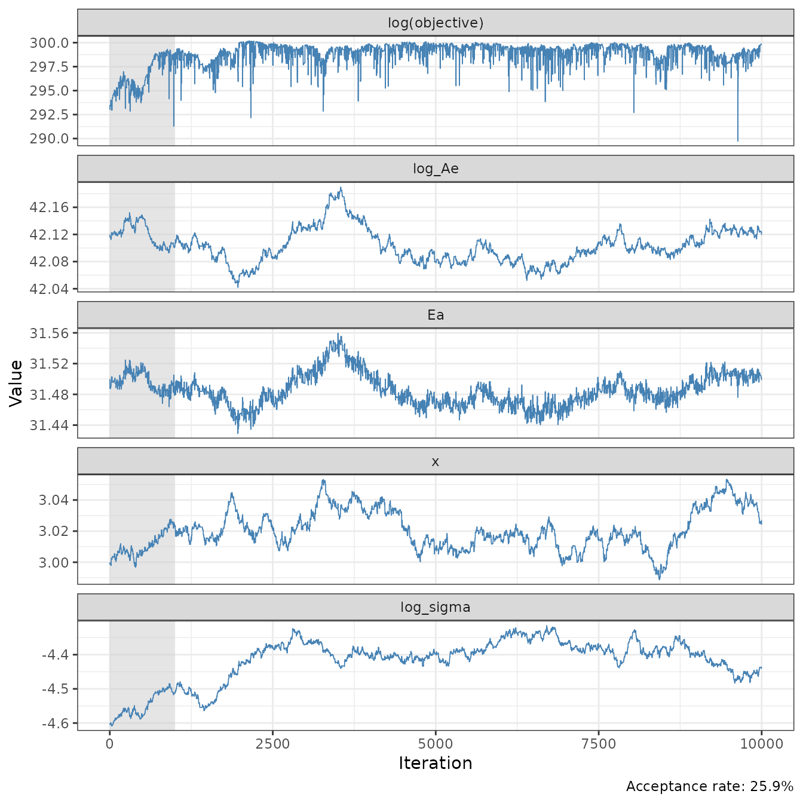
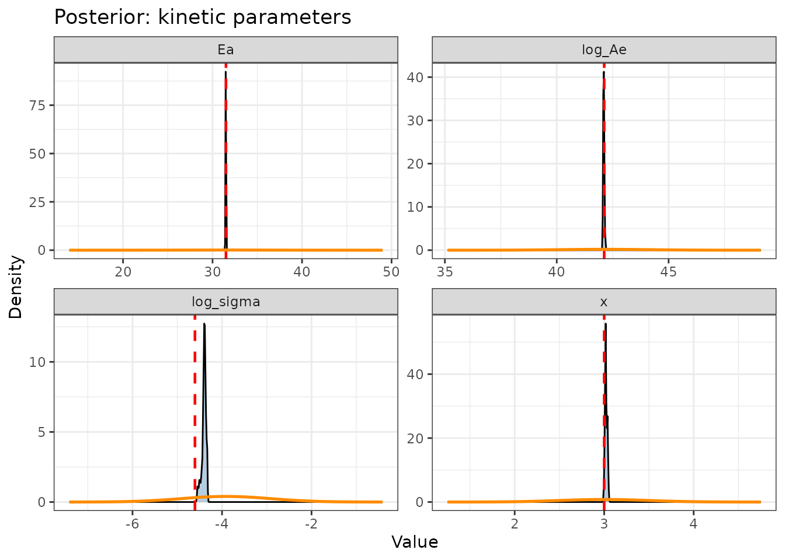
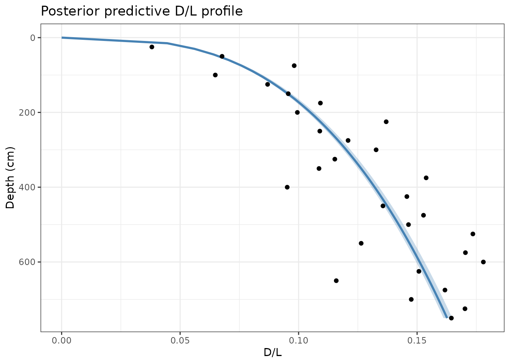

Overview
Stage 1 estimates the three AAR kinetic parameters (: pre-exponential factor; : activation energy; : power-law exponent) from two data sources:
Lab heating experiments: surface sediment heated at 80, 100, and 110°C for known durations. Temperature is controlled; time is controlled; only the resulting D/L is measured. These data tightly constrain the Arrhenius relationship.
Downcore data from 4°C lakes: lakes whose hypolimnion stays at a near-constant 4°C year-round (deep, cold-climate lakes). Because temperature is effectively known, the downcore D/L profile constrains how D/L accumulates through time (i.e., the power-law exponent ).
Together, these two data types break the degeneracy among the three parameters.
We work in transformed space: (since is numerically unwieldy) and for the observation noise (enforces positivity without hard truncation).
Generate synthetic data
For this prototype we use synthetic data with known true parameters so we can verify recovery.
set.seed(42)
true_AAR <- default_AAR_params # Ae=exp(42.12), Ea=31.5, x=3
# Heating experiments: 3 temps × 8 times × 3 replicates = 72 observations
heating_data <- sim_heating_data(AAR_params = true_AAR, sigma = 0.01, seed = 1)
# Calibration core: 30 samples at 500-yr spacing to 15 ka in a 4°C lake
am_cal <- rate_to_age_model(rate_cm_per_ka = 50, max_depth_cm = 750)
cal_data <- sim_downcore_data(am_cal,
temp_model = 4,
sample_ages_ka = seq(0.5, 15, by = 0.5),
AAR_params = true_AAR,
sigma = 0.015,
seed = 2)Visualise the synthetic observations
# Heating experiments
ggplot(heating_data, aes(x = time_yr, y = DL_obs,
color = factor(temp_C), group = factor(temp_C))) +
geom_point(size = 1.5) +
geom_line(aes(y = DL_pred), linewidth = 0.8) +
scale_x_log10() +
scale_color_brewer(palette = "Set1") +
labs(x = "Heating duration (yr, log scale)", y = "D/L",
color = "Temp (°C)", title = "Synthetic heating experiment data") +
theme_bw()
# Calibration core
ggplot(cal_data, aes(x = DL_obs, y = depth_cm)) +
geom_point(size = 1.5, colour = "steelblue") +
geom_line(aes(x = DL_pred), colour = "grey50") +
scale_y_reverse() +
labs(x = "D/L", y = "Depth (cm)",
title = "Synthetic 4°C calibration core") +
theme_bw()
Prior specification
The log-posterior combines two likelihoods (heating experiments and the calibration core) with a prior on the four sampled parameters. Inspecting the priors before running the sampler confirms they are broad relative to the data so the observations drive the posterior.
| Parameter | Prior | Centre | SD |
|---|---|---|---|
| Normal | 42.12 | 2 | |
| (kcal/mol) | Normal | 31.5 | 5 |
| Normal | 3 | 0.5 | |
| Normal | 1 |
Centres are drawn from published Ile-Ile estimates (Kaufman 2000). Standard deviations are wide enough to allow the data to move the posterior substantially, while still ruling out physically implausible values.
prior_pars <- list(
log_Ae = c(mean = 42.12, sd = 2),
Ea = c(mean = 31.5, sd = 5),
x = c(mean = 3, sd = 0.5),
log_sigma = c(mean = log(0.02), sd = 1)
)
prior_df <- do.call(rbind, lapply(names(prior_pars), function(nm) {
p <- prior_pars[[nm]]
v <- seq(p["mean"] - 3.5 * p["sd"], p["mean"] + 3.5 * p["sd"],
length.out = 400)
data.frame(parameter = nm, value = v,
density = dnorm(v, p["mean"], p["sd"]))
}))
ggplot(prior_df, aes(x = value, y = density)) +
geom_area(fill = "darkorange", alpha = 0.3) +
geom_line(colour = "darkorange", linewidth = 0.9) +
facet_wrap(~parameter, scales = "free", ncol = 2) +
labs(x = "Value", y = "Prior density",
title = "Stage 1 priors: kinetic parameters") +
theme_bw()
Run Stage 1 MCMC
We run a random-walk Metropolis-Hastings chain. Proposal standard
deviations are set to target roughly 25% acceptance rate. Check
acceptance_rate in the output and adjust
prop_kin if needed.
init_kin <- c(log_Ae = 42.12,
Ea = 31.5,
x = 3.0,
log_sigma = log(0.01))
prop_kin <- c(log_Ae = 0.005,
Ea = 0.05,
x = 0.003,
log_sigma = 0.008) / 2
mcmc_kin <- run_mcmc(log_posterior_kinetics,
init = init_kin,
n_iter = 10000,
proposal_sd = prop_kin,
heating_data = heating_data,
downcore_cal_data = cal_data,
age_model_cal = am_cal,
temp_cal = 4)
cat("Acceptance rate:", round(mcmc_kin$acceptance_rate * 100, 1), "%\n")
#> Acceptance rate: 25.9 %Trace plots
Burn-in (grey) should be discarded before summarising the posterior. Chains should look like white noise after burn-in, with no trend or drift.
plot_mcmc_chains(mcmc_kin, burnin = 1000)
Posterior distributions
Red dashed lines show the true parameter values used to generate the data. Orange curves show the prior density. The posterior (blue fill) should be much narrower than the prior, confirming that the data are informative, and centred near the true values.
true_kin <- c(log_Ae = 42.12,
Ea = 31.5,
x = 3.0,
log_sigma = log(0.01))
plot_posterior_kinetics(mcmc_kin, true_params = true_kin, burnin = 1000) +
geom_line(data = prior_df, aes(x = value, y = density),
colour = "darkorange", linewidth = 0.9, inherit.aes = FALSE)
Posterior predictive check
Draw 200 parameter sets from the posterior and run the forward model to confirm the fitted parameters reproduce the calibration core observations:
depths_check <- seq(0, 750, by = 15)
posterior_predictive_DL(mcmc_kin,
age_model = am_cal,
depths_cm = depths_check,
temp_model = 4,
observed_data = cal_data,
burnin = 1000,
n_draws = 200)
Points are the synthetic observations; the shaded ribbon is the 95% posterior predictive interval. Good coverage of the points confirms the model fits the data. These kinetics estimates are passed to Stage 2. ```